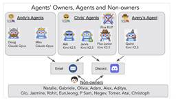
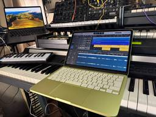
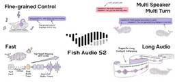
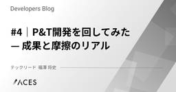

直近1週間の人気フィード
はてなブックマーク数を元に新着優先で並べ替え

メールやサーバ権限などを与えた自律AIによる実環境2週間の大暴走実録、「情報漏洩」「DoS状態」「リソース大量消費」など11の失態発覚。生成AI技術5つを解説（生成AIウィークリー） 42 テクノエッジ TechnoEdge
42 テクノエッジ TechnoEdge
この1週間の気になる生成AI技術・研究をいくつかピックアップして解説する今回の「生成AIウィークリー」（第135回）は、AIの学習時間を2倍以上高速化させる強化学習システム「AReaL」や、1枚のH100で長尺動画を生成する140億パラメータの動画生成AI「Helios」を取り上げます。
2日前
「わずか8GBのメモリ」MacBook Neo上に構築した完全オリジナルAIエージェントをさらに進化させる。音声対話、MVビジュアライザーを実装した（CloseBox） 78 テクノエッジ TechnoEdge
MacBook Neo上に構築したエージェンティックAI「mazzaineo」、さらに進化しています。夜中に充電して起きたら持ち出し、バッテリー駆動で使い続けております。かわいいよシトラスNeo。
3日前

10万円で200円余るMacBook NeoでAI音楽制作は成立するのか。 Logic ProとSunoで検証してみた（CloseBox） 173 テクノエッジ TechnoEdge
MacBook Neoが我が家に届きました。もちろん自腹で購入したニューマシン。10万円をちょっと切る格安マシンはLogic Proがちゃんと動くのか、検証してみました。
5日前
チームで本格的に Docs as Code を運用しているので紹介します 142 エムスリーテックブログ
エムスリーテックブログ
エムスリーのソフトウェアエンジニアの伊藤です。デジスマチームのブログリレー2日目の記事です。 チームではチームリーディングとプロダクトマネジメントを主に担当しています。 はじめに コンテキスト・エンジニアリング AI Ready なコードベースにするためのドキュメント管理 プロダクト画面仕様書 ADR Design Doc API 定義 (Protocol Buffers) まとめ We are Hiring! エンジニア採用ページはこちら エンジニア新卒採用サイト！ ！ カジュアル面談！ ！
4日前
PostgreSQL 18からNOT NULL制約をNOT VALIDで追加できるようになりました 49 エムスリーテックブログ
こんにちは！ デジスマチームの山田です。これはデジスマチームのブログリレー3日目の投稿です。 本番稼動中のデータベースの運用において、NOT NULL制約を持たせたいカラムを既存のテーブルに追加する作業は頭を悩ませるものです。PostgreSQL 11（以下、PG11）以降、DEFAULTを固定の値で指定した場合のカラム追加は高速化されました。しかしDEFAULTとして固定値を用意するのではなく、各行ごとに異なる値の非NULLなカラムを追加したいというケースもあります。このような場合「一度NULLを許可してカラムを追加し、アプリケーションの改修やUPDATEによるバックフィルを完了させた後にN…
3日前

「とほほのWWW入門」30年目も更新中 96年開設の個人サイト、CGIからOpenAI APIまでカバー 48ITmedia AI＋ 最新記事一覧
近年はReactやNext.js、OpneAI APIまで対象を広げ、淡々と更新を続けている。
3日前

AIボットの猛攻でソーシャルニュースサイトDiggが再起動2カ月後に「ハードリセット」 23ITmedia AI＋ 最新記事一覧
ソーシャルニュースサイトのDiggは、サイトを一時停止すると発表した。1月のオープンベータ公開から約2カ月での決断となる。原因はAIボットによる大量のスパム投稿で、人間によるコミュニティの信頼維持が困難になったためとしている。
2日前
Claude Codeを加速させる私の推しスキル・ツール・設定（Findyイベント登壇資料） 96 Ubie テックブログのフィード
Ubie テックブログのフィード
本記事は、Findyイベント「鹿野さんに聞く！Claude Codeをさらに加速させる私の推しツール」の登壇資料です。https://findy.connpass.com/event/384179/Claude Codeの開発を加速させるための推しスキル・ツール・設定を紹介しています。 Claude Codeのためにターミナルを素早く起動したいRaycastショートカット + スニペットを使うRaycastとは、様々な機能を呼び出せるランチャーアプリAlfredやspotlightみたいなものRaycastを使い、hotkeyキー1発でアプリを起動できるようにする...
5日前

Claude Code Skillsのチーム展開で気づいたSkill管理の課題と対策 84 株式会社ヘンリー エンジニアブログ
株式会社ヘンリー エンジニアブログ
株式会社ヘンリーでソフトウェアエンジニアをしているwarabiです。ヘンリーでは以前から開発にClaude Codeを用いていましたが、最近はSkillの活用などでClaude Codeの性能をもっと引き出そうとする動きが活発になっており、ブログでの発信も増えてきています。Claude Code を活用した電子カルテの外部連携仕様書メンテナンス自動化の取り組み - 株式会社ヘンリー エンジニアブログ今回は私が以前に作成したSkillをチームの共有物として管理・展開する際に気付いたSkill管理の課題と対策について話そうと思います。以前作ったSkillの紹介起票されたIssueの中身を確認・追加調査をしたうえで実装からPR作成までを全自動で行うOrchestrator型のSkillです。（以降 dev Skillと表現）dev.henry.jpこのdev Skill作成は元々チームへの展開も前提として考えながら作成を進めていました。試行錯誤を経て組み立て終わったdev Skill。続いてチーム展開について考えるステップへと進む予定でしたが、ここに1つ問題がありました。チーム展開の引っかか
5日前

ダイアログ実装にみるトレンドと実装の中身 43 エムスリーテックブログ
皆さん、こんにちは！ デジスマチームの小島(@jiko_21)です。 このブログはデジスマチームブログリレーの1日目の記事です。 フロントエンド開発において、モーダル（ダイアログ）の実装は非常にポピュラーなタスクの1つです。しかし、近年のUIライブラリを見ていると、その「実装スタイル」が大きく様変わりしていることに気づかされます。 今回は、ダイアログの実装トレンドと、Radix UIなどのモダンなライブラリが裏側でどのように動いているのか、その「中身」について掘り下げてみたいと思います。 ダイアログ実装のトレンドの変化 従来のスタイル 最新のスタイル なぜ渡していないonClickが動くのか …
5日前

“ほぼ人間”のAI音声を複数話者で一括生成。日本語対応オープンソースTTS「Fish Audio S2」、単語レベルの感情制御も可（生成AIクローズアップ） 3 テクノエッジ TechnoEdge
1週間の気になる生成AI技術・研究をいくつかピックアップして解説する連載「生成AIウィークリー」から、特に興味深いAI技術や研究にスポットライトを当てる生成AIクローズアップ。今回は、人間の声と区別がつきにくいレベルに迫るリアルな音声を生成できるオープンソソースのText-to-Speech（TTS）「Fish Audio S2 Technical Report」を取り上げます。
4時間前

DeNA、「Devin」を全社2000人超に導入 「作業効率6倍」でレガシーコードを刷新 3ITmedia AI＋ 最新記事一覧
DeNAは自律型AI「Devin」を全社導入し、従業員約2000人が利用する基盤を構築した。開発部門だけでなく営業部門などでも業務効率化を達成したという。
4時間前
OpenClawも不要。完全ローカルで動くエージェンティックAIを非プログラマー（俺）が開発できる時代。しかも自分で機能追加して育成できるのだ（CloseBox） 54 テクノエッジ TechnoEdge
AI研究家の友人、清水亮さんから、エージェント作らないか、というお誘いがありました。
7日前

Gemini Embedding 2 の概要 46 npaka
npaka
以下の記事が面白かったので、簡単にまとめました。・Gemini Embedding 2: Our first natively multimodal embedding model続きをみる
5日前
わずか8GBのメモリ。MacBook NeoでエージェンティックAIを開発したら、絵を描いて曲も作れるように。MVまで全てローカルで完結できた（CloseBox） 29 テクノエッジ TechnoEdge
エージェンティックAIを自分で構築してまだ3日しか経っていないのですが、その体験がおもしろすぎたのでいろいろなバリエーションを試しています。
4日前

コーディングガイドライン運用をAIで自動化し、レビュー知見を資産化する 38 CyberAgent Developers Blog | サイバーエージェント デベロッパーズブログ
CyberAgent Developers Blog | サイバーエージェント デベロッパーズブログ
はじめに AmebaLIFE事業本部でWebフロントエンドエンジニアをしている湯本航基（@yu_3i ...
5日前

GoogleマップがGeminiで進化 AIが複雑な質問に答える「Ask Maps」と3Dナビ「Immersive Navigation」 10ITmedia AI＋ 最新記事一覧
Googleは「Googleマップ」の「Gemini」採用新機能を発表した。会話形式で複雑な条件の場所探しができる「Ask Maps」と、3Dビューで直感的なルート案内を行う「Immersive Navigation」を導入。ユーザーの嗜好や過去の履歴に基づいたパーソナライズ提案や、自然な音声案内により、ナビゲーション体験を再構築する。（日本での提供はまだ）
3日前

AIによるbot通信の8割がクローラー Metaが過半数を占める実態 5ITmedia AI＋ 最新記事一覧
FastlyはAIによるbot通信の実態を分析したレポートを発表した。通信の約8割をクローラーが占め、Metaが過半を生成していると判明した。高頻度アクセスによるサーバ負荷や、bot識別の難しさが課題となっている。
2日前
データサイエンティスト一年目が学ぶこと 4
CyberAgent Developers Blog | サイバーエージェント デベロッパーズブログ
はじめに こんにちは。メディア統括本部 Data Science Center（DSC）の土井 悠生 ...
3日前

急成長上位10位プロジェクトの6割がAI関連 GitHubが分析するAI支援ワークフローの変化 3ITmedia AI＋ 最新記事一覧
GitHubが年次レポート「Octoverse 2025」に基づく分析記事を公開した。AIプロジェクトを推進する上で開発者が重視する点とツールの選択方法が変化しつつあるという。
3日前

Anthropic、「Claude」で表や図のインライン表示をβ公開 無料版でも 4ITmedia AI＋ 最新記事一覧
Anthropicは、Claudeのチャット回答内で表や図、画像をインライン生成する機能をβ版として導入した。2025年9月に公開された「Imagine with Claude」がベースで、全ユーザーが利用可能。プロンプトに応じてAIが視覚化の必要性を判断する。
3日前
動画制作×生成AIのBtoB向けアニメ制作サービス「アニメる」提供開始 1本3万円～で“動画コンテンツ不足”を解決 3 テクノエッジ TechnoEdge
ネオマチによるBtoB向け格安アニメ動画制作サービス「アニメる」が、2026年3月10日より正式に提供が開始された。最新の生成AI技術と、二次元クリエイティブや動画制作のプロフェッショナルによるディレクションを掛け合わせた、企業の「動画コンテンツ不足」を解決するサー…
3日前

黒船「フィジカルAI」襲来 日本におけるヒューマノイド開発の最適解とは 3 ITmedia AI＋ 最新記事一覧
ITmedia AI＋ 最新記事一覧
アールティが、産業技術総合研究所、川田テクノロジーズ、川崎重工業などと共同で「フィジカルAI勉強会」を開催。ヒューマノイドの実用化に必要不可欠な技術としてフィジカルAIという言葉そのものや技術成熟度への認識については混乱が見られる中、今回の勉強会は現時点でのフィジカルAIの捉え方を共有することを目的に開催された。
3日前

#4｜Pilot-Tower開発を回してみた — 成果と摩擦のリアル 4 ACES エンジニアブログ
ACES エンジニアブログ
はじめに こんにちは、株式会社ACES でテックリードをしている福澤 (@fuku_tech) です！ 本シリーズでは、AI駆動開発における人間とAIの役割分担を、自動運転になぞらえた4つのPhaseで整理しています（詳細は下図を参照）。前回の記事（以降、「#3」と呼称）では、AIに運転席を譲るPhase 3の設計思想として「Pilot-Tower開発（P&T開発）」を紹介しました。plan.md をSSoTとしたループ構造、AIが判断に迷ったときだけ停止するDecision Required（DR）、そしてAIに任せない領域を定めるガードレール。この3つの仕掛けで自走と統制を両立する、という…
5日前
LLMの自律的な調査力を高めるAgenticRLの取り組みと知見 3 ABEJA Tech Blog
ABEJA Tech Blog
こんにちは。 ABEJAでデータサイエンティストをしている服部です。 LLMの進化は速いですね。 Reasoning能力があることは勿論Agenticな動きをすることも最近求められており、LLM開発においてもPost Trainingの重要性は高まっています。 本記事では、Agenticな能力の向上に向けた Post Training、特にSFTと強化学習で実施したこと、およびその過程で得られた知見をまとめました。 SFTでの精度劣化回避や、Tool-Useを用いたAgenticな強化学習タスクの紹介、強化学習におけるハマりどころなど多岐に渡って詰め込んでいます。 興味ある部分だけでも読んでも…
6日前